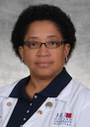
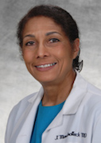
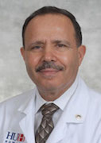
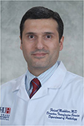

- Edward L. Lee, M.D., Chair and Program Director
- Tammey Naab, M.D., Director of Laboratories 
- Marie Fidelia-Lambert, M.D, Director, Autopsy Service
- William Green, M.D., Director, Electron Microscopy 
- Jospehine Marshalleck, M.D., Staff Pathologist 
- Ali M. Ramadan, M.D., Director, Clinical Chemistry and Informatics/Lab Management
- Lekidelu Taddesse-Heath, M.D., Director, Hematology
- Rhonda Burch-Smith, M.D., Director, Surgical Pathology 
- Faisal Mukhtar, M.D., Director, Transfusion Medicine
- Babak Shokrani, M.D., Director, Cytopathology
- Mary Ripple, M.D., Deputy Medical Examiner, State of Maryland
- David Fowler, M.D., Chief Medical Examiner, State of Maryland
- Edward Wong, M.D., Director, Pediatric Hematology, Children's National Medical Center
- Christine Reyes, M.D., Director, Pediatric Surgical Pathology, Children's National Medical Center
- Steven Schonberg, Ph.D., Quest Diagnositics Nichols Institute
- Charles Repetti, Ph.D., Quest Diagnostics Nichols Institute
- Cathy Conry-Cantilena, M.D.
Howard University Faculty
The Department of Pathology is current staffed by 10 pathologist'.
.jpg)